2 Visualizing and Describing Data
In this worksheet, we will:
- Choose how to plot different types of data with basic R plots
- Report univariate and bivariate descriptive statistics
- Include titles and labels to our plots
We will be working with R Markdown files during lectures throughout the rest of the semester (you will learn to make our own in a couple of weeks). The advantage of a R Markdown document is that it incorporates R code in chunks within the text.
Hit the run button (little green triangle) in the upper right to see this in action:
## [1] 82.1 Import Dataset
The default working directory of any R Markdown file will be the folder where it is saved. Always make sure that your dataset is in the same folder as the R Markdown file, so you won’t need need to worry about file paths:
What code can we use to get familiar with the structure of this dataset? What type of variables does it contain?
## 'data.frame': 155 obs. of 9 variables:
## $ Subject : int 1 2 3 4 5 6 7 8 9 10 ...
## $ Age : int 56 70 54 38 55 53 42 53 45 64 ...
## $ Diabetic : int 1 0 0 1 1 1 1 0 0 1 ...
## $ Edema : int 0 1 1 0 0 0 0 0 0 0 ...
## $ Cholesterol: int 302 176 244 279 322 280 562 259 281 231 ...
## $ Glucose : int 148 85 89 78 197 166 118 103 126 119 ...
## $ BP : int 72 66 66 50 70 72 84 52 88 80 ...
## $ BMI : num 33.6 26.6 28.1 31 30.5 25.8 45.8 43.3 39.3 29 ...
## $ Platelet : int 221 151 183 136 204 373 251 258 244 295 ...We can also take a quick look at descriptive statistics for all variables in the dataset:
## Subject Age Diabetic Edema
## Min. : 1.0 Min. :28.0 Min. :0.0000 Min. :0.00000
## 1st Qu.: 39.5 1st Qu.:41.0 1st Qu.:0.0000 1st Qu.:0.00000
## Median : 78.0 Median :48.0 Median :0.0000 Median :0.00000
## Mean : 78.0 Mean :48.9 Mean :0.3613 Mean :0.07097
## 3rd Qu.:116.5 3rd Qu.:56.0 3rd Qu.:1.0000 3rd Qu.:0.00000
## Max. :155.0 Max. :78.0 Max. :1.0000 Max. :1.00000
## Cholesterol Glucose BP BMI
## Min. : 120.0 Min. : 71 Min. :44.00 Min. :19.40
## 1st Qu.: 249.0 1st Qu.: 99 1st Qu.:64.00 1st Qu.:27.95
## Median : 302.0 Median :111 Median :70.00 Median :31.60
## Mean : 361.2 Mean :119 Mean :71.18 Mean :32.91
## 3rd Qu.: 399.5 3rd Qu.:136 3rd Qu.:79.00 3rd Qu.:37.00
## Max. :1775.0 Max. :197 Max. :98.00 Max. :55.20
## Platelet
## Min. : 70.0
## 1st Qu.:203.5
## Median :265.0
## Mean :272.6
## 3rd Qu.:335.0
## Max. :563.0The units for the variables are: Age (years), Cholesterol (mg/dL), Glucose (mg/dL), BP (mmHg), BMI (kg/m^2), Platelet (count in thousands).
2.2 Summarizing one variable
2.2.1 One Categorical Variable
A categorical variable defines membership in a group. When describing categorical variables, we pay attention to which category are the most and least common.
##
## 0 1
## 99 56##
## 0 1
## 0.6387097 0.3612903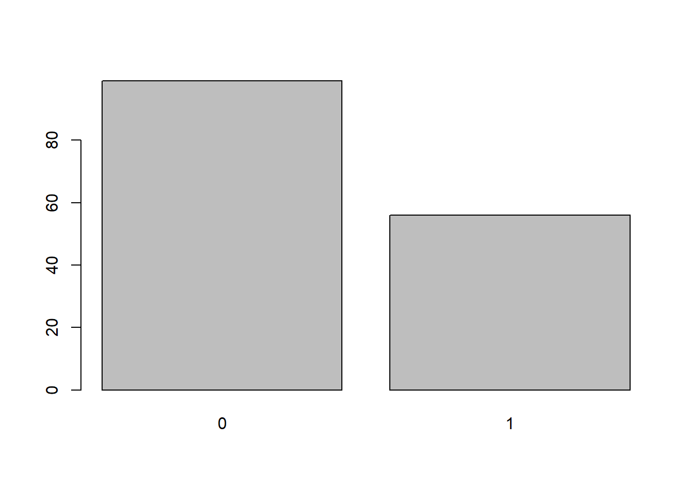
What do 0 and 1 represent though? We could choose to label the categories:
# Change the labels of the categories
med$Diabetic <- factor(med$Diabetic, labels = c('No','Yes'))
# Update bar plot
barplot(table(med$Diabetic))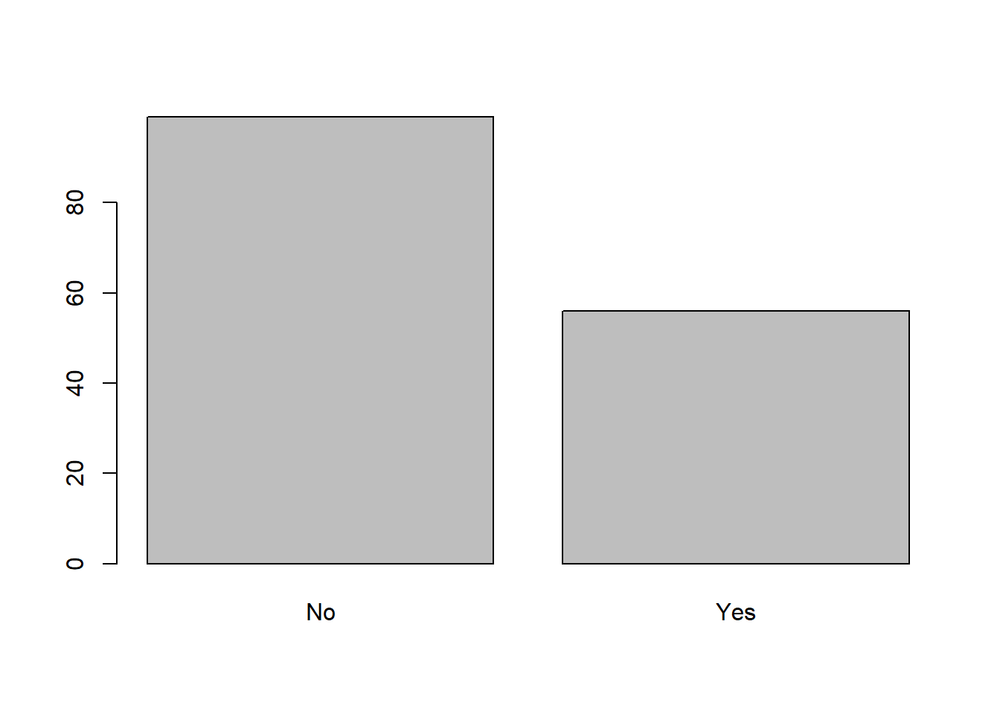
Tip: we should always add a title and labels to our plot to ensure that there is enough information about the data being presented.
# A better version of the bar plot
barplot(table(med$Diabetic),
# add a title
main = 'Frequency of Diabetic Status',
# add labels to the axes
xlab = 'Diabetic Status', ylab = 'Frequency of Patients',
# adjust limits to the y-axis
ylim = c(0,100),
# adjust colors of the bars
col=c('aquamarine','purple'))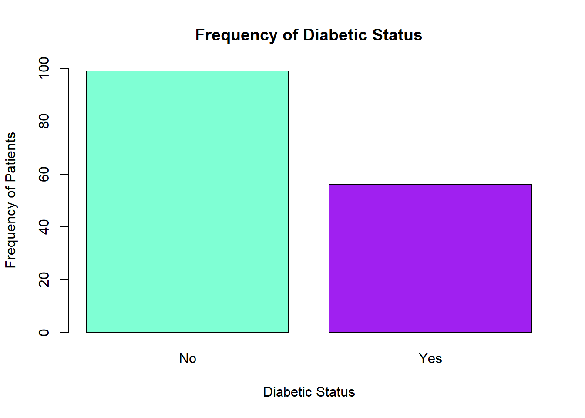
In summary, for 1 categorical variable:
- Describe with: frequencies or proportions
- Display with: bar plot
2.2.2 One Numeric Variable
A numeric variable is a quantitative measurement. When describing numeric variables, we pay attention to what a typical value is (center) and how the values vary from each other (spread), what values are most common and what values are rare.
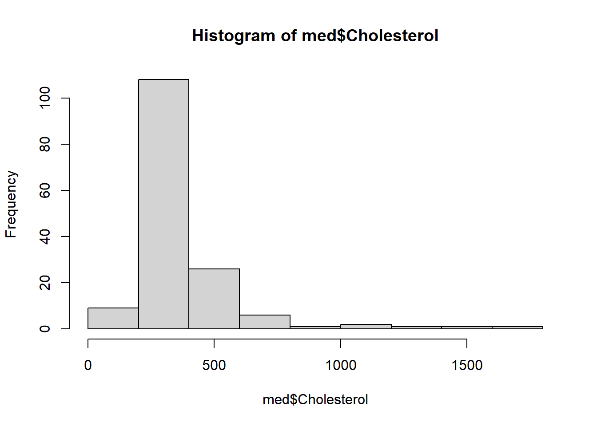
In statistics, center is a measure that represents a typical value for a numeric variable (we typically report the mean or median). The mean is the arithmetic average of the numeric values: it is the sum of all data values divided by the number of observations. The median splits the data in two halves: into the lowest 50% values and the highest 50% values.
## [1] 361.1613## [1] 302Since, usually, not all values are the same, we should also report the spread of a numeric variable. In statistics, we usually use standard deviation or the five-number summary. The standard deviation is the average distance between each data point and the mean of the dataset. In the five-number summary, the first quartile, Q1, separates the data from the lowest 25% values and the third quartile, Q3, separate the data from the highest 25% values).
## [1] 221.0252## [1] 120.0 249.0 302.0 399.5 1775.0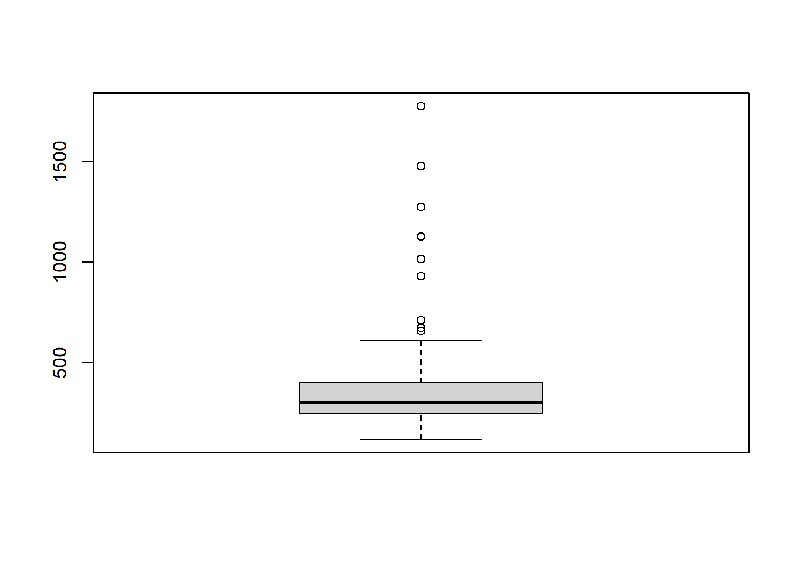
Tip: we can use some options to improve our plots with more options.
# A better version of the boxplot
boxplot(med$Cholesterol,
# add a title
main = 'Boxplot of Cholesterol',
# add labels to the axes
xlab = 'Cholesterol (mg/dL)',
# adjust colors of the box
col = 'lightgreen',
# adjust the appearance of the points
pch = 20,
# make the boxplot horizontal
horizontal = TRUE)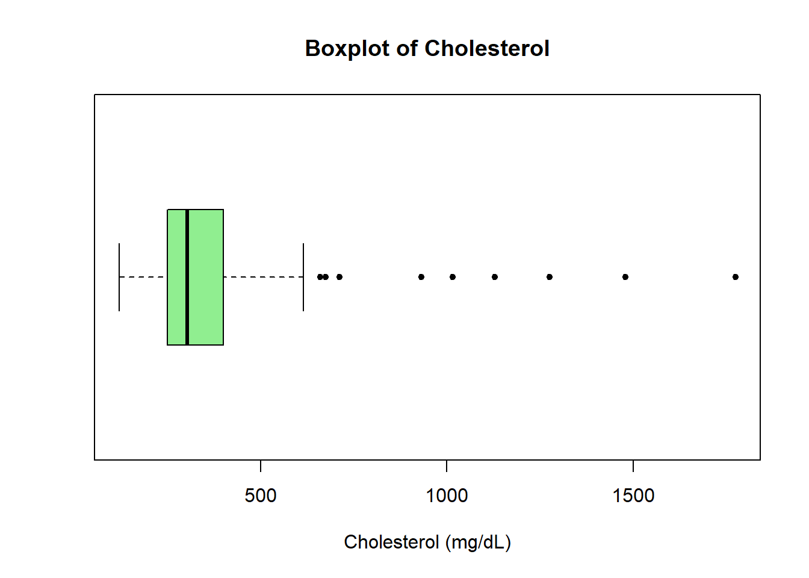
In summary, for 1 numeric variable:
- Describe with:
- Center: mean or median
- Spread: standard deviation or quartiles
- Display with: histogram or boxplot
2.3 Group Practice
- Pick a variable from this dataset (other than
DiabeticorCholesterol). Describe and display its distribution with an appropriate plot. - Change the default color of your plot and update the title and axis labels.
- Post your graph on your group’s slide here.
2.4 Summarizing two variables (bivariate relationship)
2.4.1 Two Numeric Variables
When comparing two numeric variables, we may wonder if high values on one variable are associated with high/low values for another variable.
Correlation describes the strength of a (linear) relationship between two variables. With the function cor, we refer by default to the Pearson correlation coefficient which takes values between -1 (strong negative correlation) and 1 (strong positive correlation) with 0 indicating that there is no correlation.
## [1] 0.4296074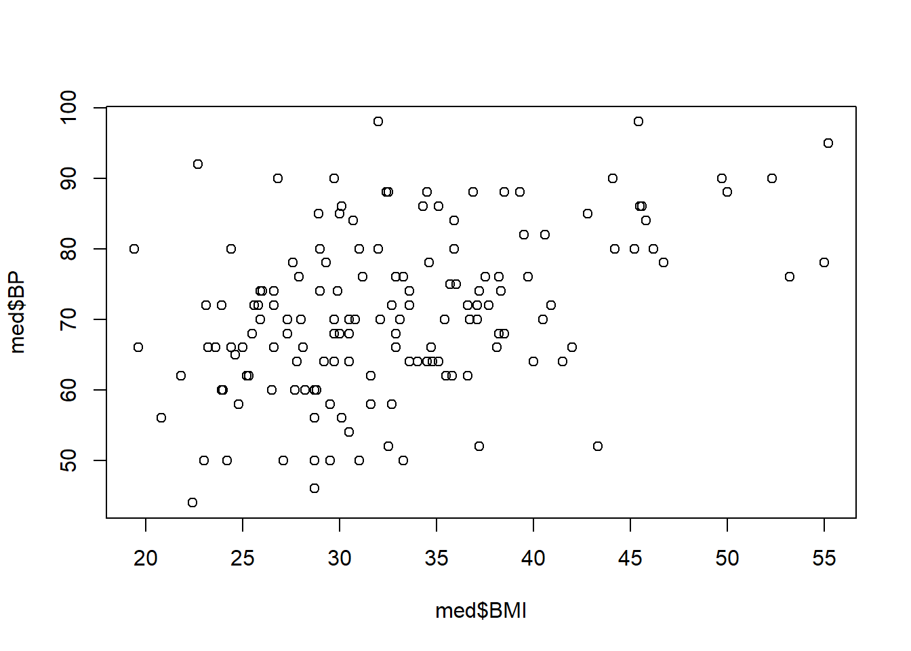
Tip: we can use some options to improve our scatterplots.
# A better version of the bar plot
plot(med$BMI,med$BP,
# add a title
main = 'Relationship between BMI and Blood Pressure',
# add labels to the axes
xlab = 'BMI (kg/m^2)', ylab = 'Blood Pressure (mmHg)',
# adjust appearance of points
pch = 20)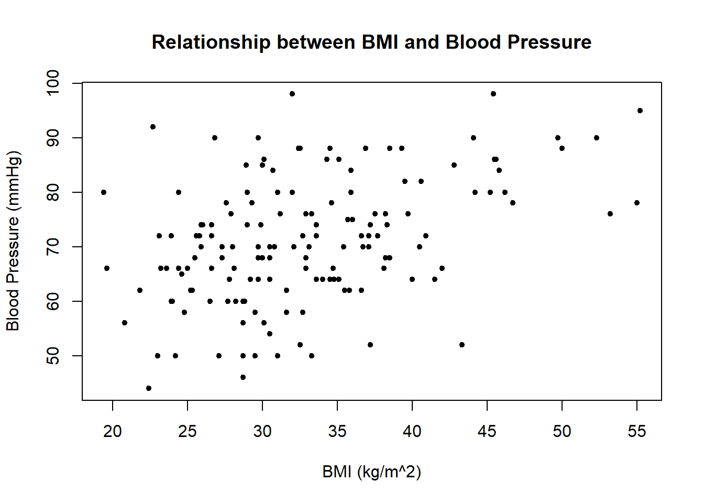
In summary, with 2 numeric variables:
- Describe with: correlation
- Display with: scatterplot
2.4.2 One Numeric and One Categorical Variable
When comparing a numeric variable for different categories, we may wonder if the distribution of the numeric variable (center, spread) is about the same across all categories or not.
# Compare means
aggregate(BP ~ Diabetic, data = med, mean)
# What about the standard deviations of each group?
aggregate(BP ~ Diabetic, data = med, sd)# Compare distributions with a grouped boxplot
boxplot(med$BP~med$Diabetic,
main = 'Diastolic Blood Pressure',
ylab = 'Blood Pressure (mg/dL)',
xlab = 'Diabetic Status',
col = c('blue','red'))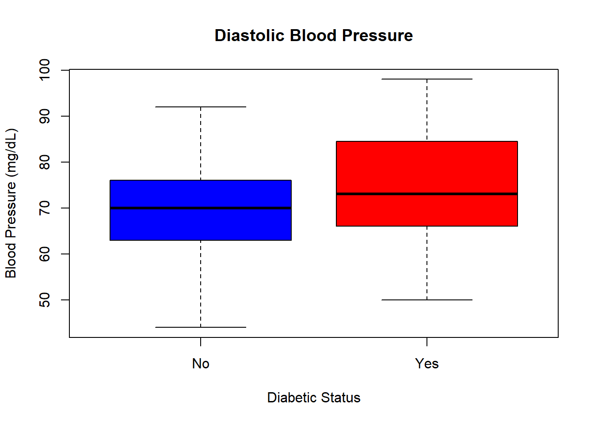
# Create subsets for each Diabetic group:
Diabetic <- med[med$Diabetic == "Yes",]
NonDiabetic <- med[med$Diabetic == "No",]# Then make a histogram for each group (use same limits on the axes)
hist(Diabetic$BP,
main='Histogram of Blood Pressure for Diabetic Patients',
xlab='Blood Pressure (mmHg))',
col='lightgreen',
ylim=c(0,25), xlim=c(40,100))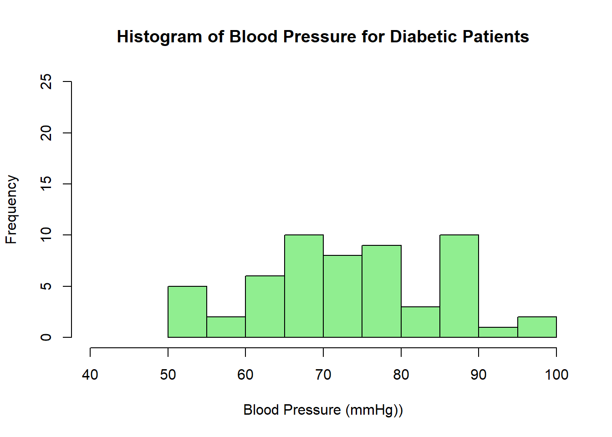
hist(NonDiabetic$BP,
main='Histogram of Blood Pressure for Non-Diabetic Patients',
xlab='Blood Pressure (mmHg))',
col='lightblue',
ylim=c(0,25), xlim=c(40,100))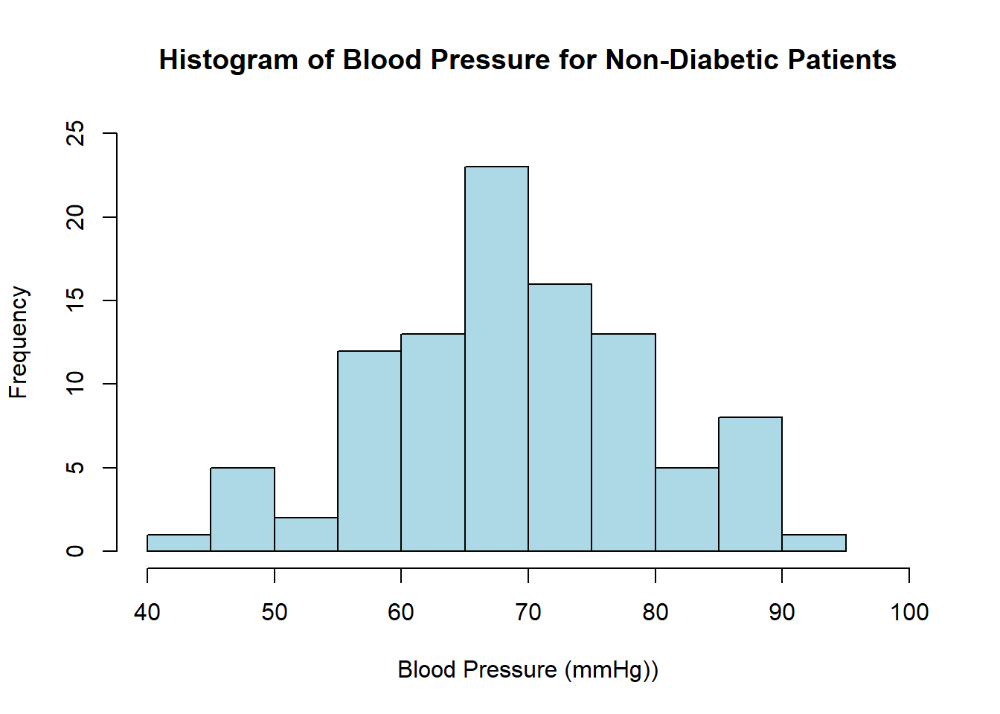
In summary, with 1 numeric variable and 1 categorical variable:
- Describe with: compare center and spread of each group
- Display with: grouped histogram or grouped boxplot
2.4.3 Two Categorical Variables
When comparing two categorical variables, we may wonder what are the most and least common categories of one variable across categories of the other variable.
Let’s label the Edema status variable like we did for Diabetic status:
# Change the labels of the categories
med$Edema <- factor(med$Edema, labels=c('No','Yes'))
# Build a contingency table
table(med$Edema, med$Diabetic, dnn = c("Edema", "Diabetic"))## Diabetic
## Edema No Yes
## No 89 55
## Yes 10 1# Two ways to look at proportions
prop.table(table(med$Edema, med$Diabetic, dnn = c("Edema", "Diabetic")), 1) # rows## Diabetic
## Edema No Yes
## No 0.61805556 0.38194444
## Yes 0.90909091 0.09090909## Diabetic
## Edema No Yes
## No 0.89898990 0.98214286
## Yes 0.10101010 0.01785714# Compare Edema status for Diabetic vs Non-Diabetic
barplot(table(med$Edema, med$Diabetic),
main = 'Diabetes and Edema Status',
xlab = 'Diabetic Status', ylab = 'Frequency',
col = c('lightcoral','lightgreen'),
legend = TRUE)
# Add a legend
legend("topright",
legend = c("No", "Yes"),
fill = c('lightcoral','lightgreen'),
title = "Edema Status")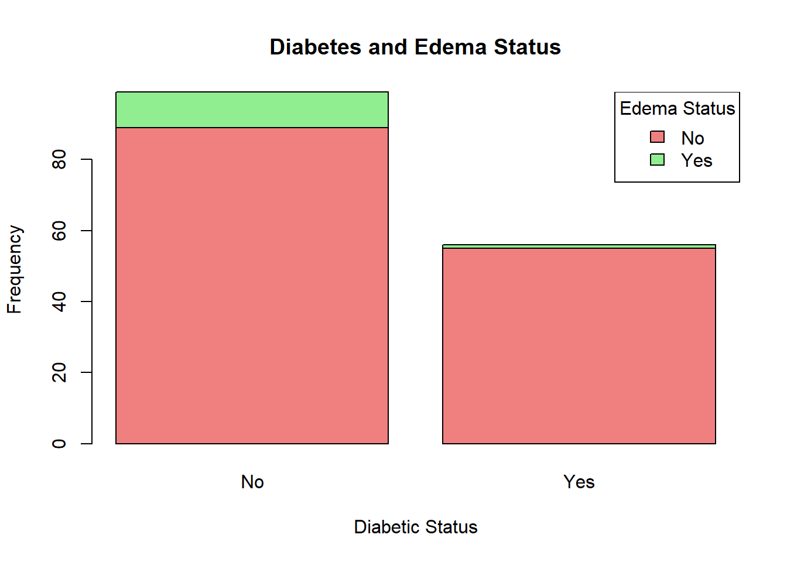
# Compare Edema status for Diabetic vs Non-Diabetic, relatively
barplot(prop.table(table(med$Edema, med$Diabetic),2),
main = 'Diabetes and Edema Status',
ylab = 'Proportion', xlab = 'Edema Status',
col = c('lightcoral','lightgreen'),
legend = TRUE)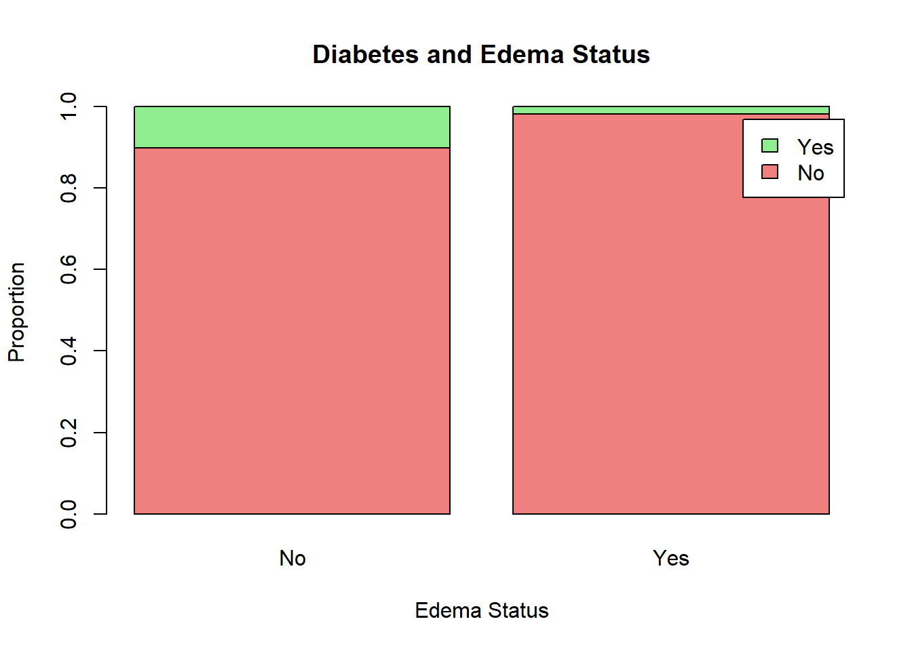
In summary, with 2 categorical variables:
- Describe with: row or column proportions
- Display with: two-way frequency table or grouped bar chart
2.5 Group Practice
- Pick a variable that might be related to Saliva Glucose Level (Glucose). Describe and display the bivariate relationship.
- Add your graph on your group’s slide here.
Here are some other resources that can help make your base R plots look nicer: